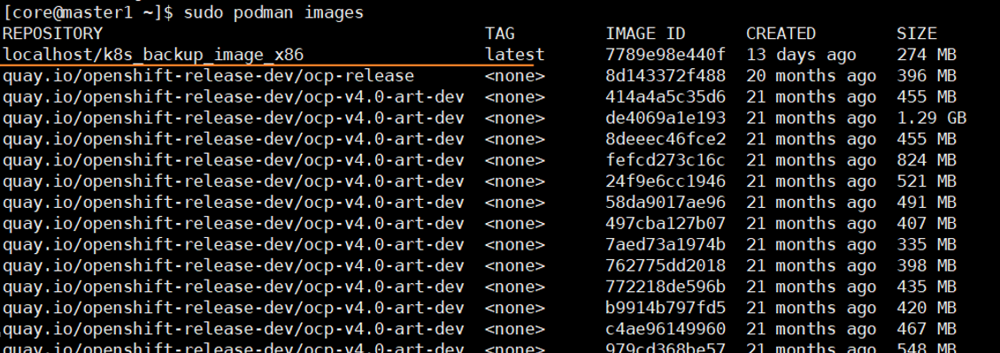

前提条件
上传Kubernetes安装包前，请根据版本及补丁号下载“XXX_K8s_BackupImage.tgz”安装包，解压安装包后，获得对应产品架构的“k8s_backup_image_x86.tar”或“k8s_backup_image_arm64.tar”压缩包，Kubernetes安装包通过以下方式获取。
操作步骤
- 通过后台登录Kubernetes集群。
- 执行oc get csiNode命令查看安装了CSIDriver的节点，回显中“DRIVERS”参数值不为0的节点则为安装了CSIDriver的工作节点。

- 将已获取的镜像压缩包上传至所有安装了CSIDriver的工作节点。
- 分别登录安装了CSIDriver的工作节点，在镜像压缩包所在目录，执行sudo podman load -i 镜像压缩包名称命令，上传镜像。
- 上传成功后，可通过sudo podman images命令查看镜像名称和Tag信息，镜像名称和Tag分别对应回显中的“REPOSITORY”和“TAG”参数。
